这篇文章是Python可视化seaborn系列的第二篇文章，本文将详解seaborn如何探索数据的分布。
1 | import numpy as np |
单变量
直方图 displot
seaborn.distplot(a, bins=None, hist=True, kde=True, rug=False, fit=None, hist_kws=None, kde_kws=None, rug_kws=None, fit_kws=None, color=None, vertical=False, norm_hist=False, axlabel=None, label=None, ax=None)
- bins → 箱数
- hist、ked、rug → bool,是否显示箱/密度曲线/数据分布
- norm_hist → 直方图是否按照密度来显示，如果为False,显示计数
- {hist，kde，rug，fit} _kws：字典，对应部分的各种参数。
- vertical → 是否水平显示
- fit → 可结合scipy库在图像上做拟合
- label → 图例
- axlabel → x轴标注
1 | # 直方图 |
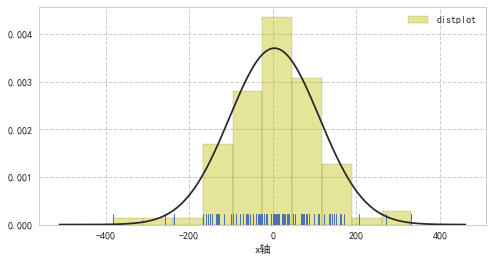
1 | plt.figure(figsize=(8,4)) |
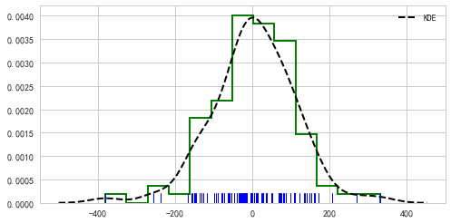
核密度估计图 kdeplot
核密度估计的步骤：
- 每一个观测附近用一个正态分布曲线近似
- 叠加所有观测的正态分布曲线
- 归一化
seaborn.kdeplot（data，data2 = None，shade = False，vertical = False，kernel =’gau’，bw =’scott’，gridsize = 100，cut = 3，clip = None，legend = True，cumulative = False，shade_lowest = True，cbar = False，cbar_ax =无，cbar_kws =无，ax =无，** kwargs ）
- shade: 如果为True，则用颜色填充KDE曲线下方的区域（或者在数据为双变量时用颜色填充的轮廓）
- kernel: {‘gau’|‘cos’|‘biw’|‘epa’|‘tri’|‘triw’} 用于拟合的核，双变量值能用高斯核（gau）
- bw: {‘scott’|’silverman’|标量|一对标量} 确定核的大小，近似理解为拟合程度，bw越大，曲线越平缓。
- gridsize：int, 网格中的离散点数
- cumulative ：是否绘制累积分布
- cbar：参数若为True，则会添加一个颜色条(颜色条在双变量kde图像中才有)
1 | # 单个样本数据密度分布图 |
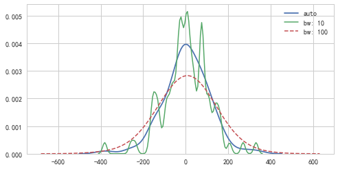
1 | sns.kdeplot(s, label="累积图",color='k',cumulative=True, |
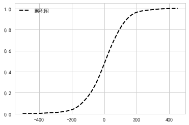
核密度各级图不但能绘制单个变量的，也能绘制双变量！！！
1 | # 2、密度图 - kdeplot() |
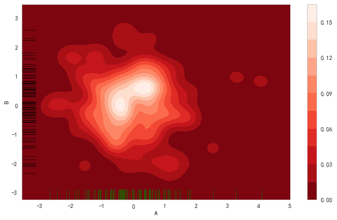
双变量
jointplot
seaborn.jointplot（x，y，data = None，kind =’scatter’，color = None，height = 6，ratio = 5，space = 0.2，dropna = True，xlim = None，ylim = None，joint_kws = None，marginal_kws =None，annot_kws =None，** kwargs ）
该函数是JoinGrid类的一个轻量级界面，如果想更加灵活的绘制，可以使用JoinGrid函数
- kind: 设置类型：“scatter”、“reg”、“resid”、“kde”、“hex”
- height: int, 图像大小（图像自动调整为正方形）
- radio: int, 主图与边缘图的高度比
- space: # 设置主图和边缘图的间距
- {x，y} lim ：在绘图之前设置轴限制
- {joint，marginal，annot} _kws：dicts 绘图组件的其他关键字参数
1 | # 散点图 + 边缘直方图 |
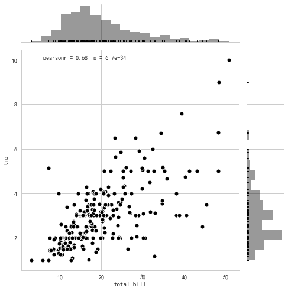
seaborn会直接给出变量的皮尔逊相关系数和P值
pearson相关系数计算：
- $\rho_{X,Y} = \frac{cov(X,Y)} {\sigma_X \sigma_Y}$
- p：样本间的差异由抽样误差所致的概率小于p.p-value
1 | # 回归图 + 边缘直方图 |
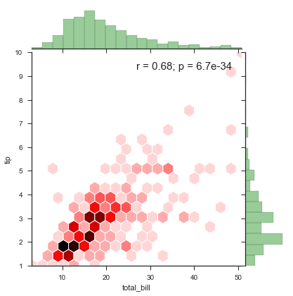
1 | # 密度图 |
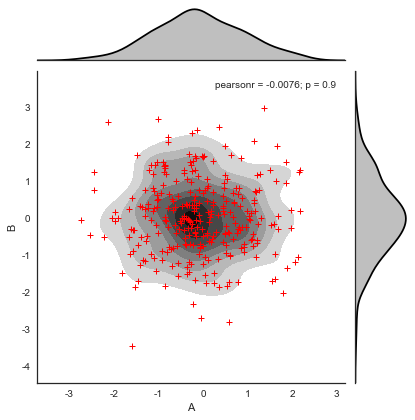
JointGrid
前面讲过jointplot其实是JoinGrid的一个封装，要想有更灵活的设置，可以使用JoinGrid类
- __init__（x，y，data = None，height = 6，ratio = 5，space = 0.2，dropna = True，xlim = None，ylim = None）
方法：- plot（joint_func，marginal_func ,annot_func)→ 绘制完整的图形
- plot_joint（func，** kwargs）→ 绘制双变量图形
- plot_marginals（func，** kwargs）→ 绘制边缘单变量图形
- savefig（* args，** kwargs）→ 保存
- set_axis_labels（[xlabel，ylabel]）→ 在双变量轴上设置轴标签。
1 | # 可拆分绘制的散点图 |
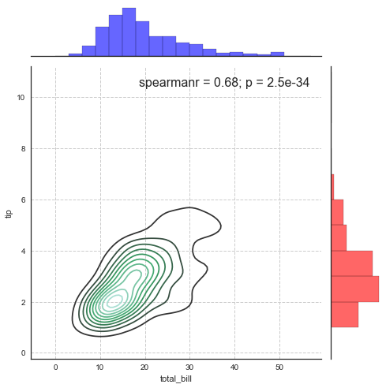
1 | # 可拆分绘制的散点图 |
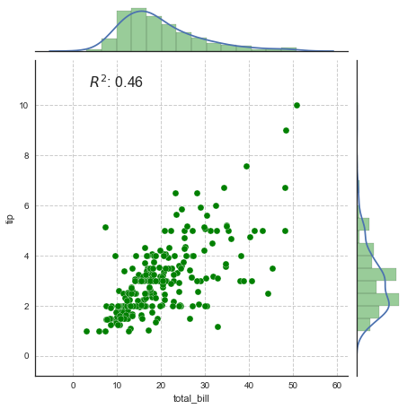
1 | # 1、综合散点图 - JointGrid() |
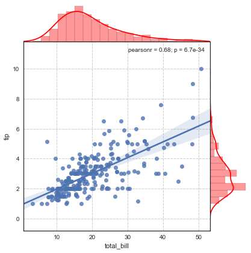
探索两两变量之间的关系
通常我们的数据并不是只有一个或者两个变量，那么对于多个变量，我们常需要探索两两变量之间的分布及关系这是我们就需要使用pairplot函数
或者是PairGrid类
pairplot
seaborn.pairplot（data，hue = None，hue_order = None，palette = None，vars = None，x_vars = None，y_vars = None，kind =’scatter’，diag_kind =’auto’，markers = None，s = 2.5，aspect = 1，dropna = True，plot_kws = None，diag_kws = None，grid_kws = None）
- hue: string(变量名) ： 颜色将按照指定的变量分类
- hue_order ： list 设置调色板色调变量级别
- palette ： 调色板
- vars : list 变量名称列表，否则使用所有数值型变量的列
- markers: 点样式
1 | # 2、矩阵散点图 - pairplot() |
sepal_length sepal_width petal_length petal_width species
0 5.1 3.5 1.4 0.2 setosa
1 4.9 3.0 1.4 0.2 setosa
2 4.7 3.2 1.3 0.2 setosa
3 4.6 3.1 1.5 0.2 setosa
4 5.0 3.6 1.4 0.2 setosa
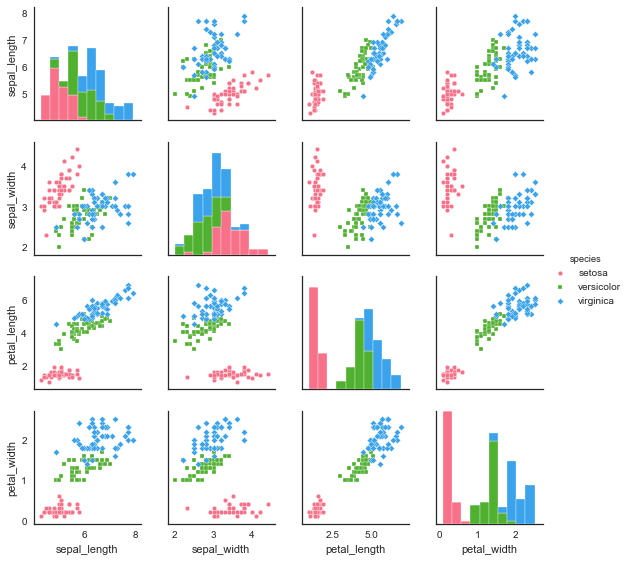
1 | # 2、矩阵散点图 - pairplot() |
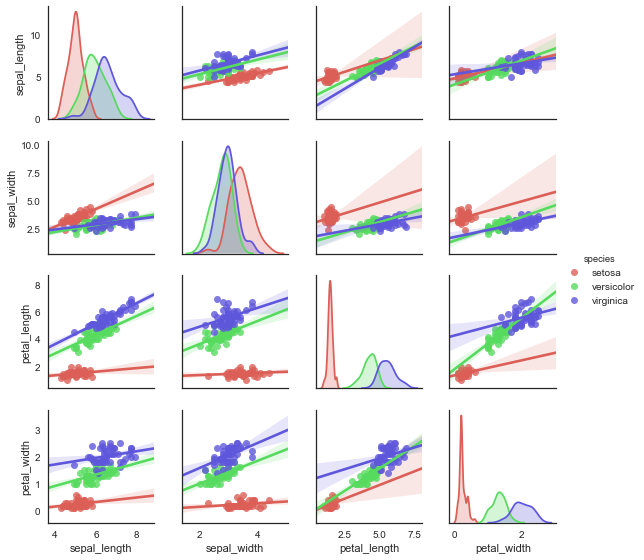
PairGrid
相当于jointplot 和 JointGrid的关系，PairGrid 对矩阵散点图有着更为灵活的控制
- __init__（data，hue = None，hue_order = None，palette = None，hue_kws = None，vars = None，x_vars = None，y_vars = None，diag_sharey = True，height = 2.5，aspect = 1，despine = True，dropna = True）
方法：- add_legend（[legend_data，title，label_order]）绘制一个图例，可能将其放在轴外并调整图形大小。
- map_diag（func，** kwargs）：在每个对角线子图上绘制具有单变量函数的图。
- map_lower（func，** kwargs）：在下对角线子图上绘制具有双变量函数的图。
- map_upper（func，** kwargs）：在上对角线子图上绘制具有双变量函数的图
- map_offdiag（func，** kwargs）：在非对角线子图上绘制具有双变量函数的图。
- set（** kwargs）：在每个子图集Axes上设置属性。
1 | # 2、矩阵散点图 - PairGrid() |
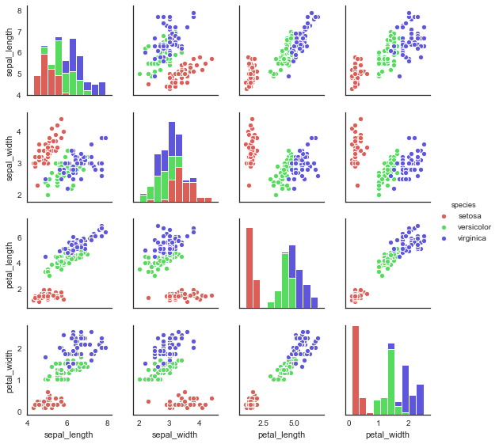
1 | # 2、矩阵散点图 - PairGrid() |
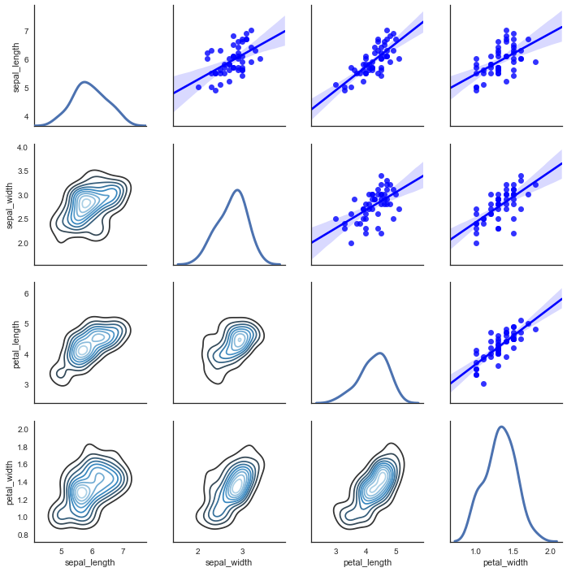